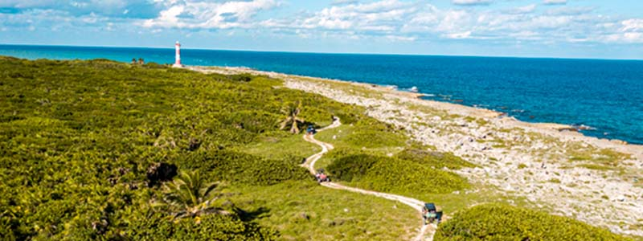

Punta Molas is the boundary that marks the northern end of the coast of the island of Cozumel,
Quintana Roo, Mexico. On site there is an old lighthouse and some of the most beautiful beaches of
the island of Cozumel. Accessed by a narrow unpaved road surrounded by tropical vegetation, passable
all year.
Punta Molas is one of the most important places to visit in Cozumel, is one of those places where
you can distinguish much of the Mexican coast of the Riviera Maya, the Lighthouse, the Tomb Caracol,
who are in this place, and from where they are arriving cruise ships and yachts that come to the
island.
The road is a bit complicated so it is recommended to have all-terrain trucks, at the end of the day
will be the best experience I have lived since the end of the hard drive you will find the beautiful
turquoise waters and white sand belonging to this part of the coast.
A mystical place where you can visit the Tomb Caracol, an archaeological site where beauty speaks
for itself. From the lighthouse you can see the cruise ships and yachts arriving in the northern
island of Cozumel Channel.
Formerly, it was from here that the Maya could see the arrival of large storms.

Punta Sur
The Ecological Reserve Punta Sur Park encompasses an outstanding variety of natural landscapes. It
is extended for more than one hundred hectares; lagoon environment prevails with its coastal humid
soil and mangrove jungles that are the setting of a mosaic of environments and coastal ecosystems.
The lagoon shelter is a very rich and wide variety of wild flora and fauna. The Ecological Reserve
Punta Sur Park is located on southern tip of the island. The most important Ecological and Tourist
project of Cozumel Island. Punta Sur promotes rational and responsible administration of natural
resources.
The Ecological Reserve Punta Sur Park encompasses an outstanding variety of natural landscapes.
Extending for more than one hundred hectares, lagoon environment prevails with its coastal humid
soil and mangrove jungles that are the setting of a mosaic of environments and coastal ecosystems.
The lagoon shelter is a very rich and wide variety of wild flora and fauna.
The marine part of the reserve includes areas where we found white sand beaches as well as
extraordinarily transparent waters. Along many reef formations an abundant and diverse fish swim at
very close proximity to the beach. The reserve site of the Colombia lagoon is in excellent
ecological condition, thanks to the dedication of the Foundation. Our distinguished visitors will
certainly enjoy the extraordinary diversity of this ecosystem. We wish you a very pleasant visit to
the Ecological Reserve Punta Sur Park.
San Gervasio Ruins
The Mayan ruins of San Gervasio. The most famous Mayan ruins at San Gervasio is
the largest archaeological site on the island of Cozumel. San Gervasio was a sanctuary of the Mayan
goddess of fertility "Ixchel" and pilgrimage center of the Maya who came to worship.
There is another Maya ruin in "The Cedral", the first settlement of the island where it is carried
out every year in the month of May the "Feast of the Holy Cross." It is a small ruin near a church
where there is a fair and traditional dances. Today the archaeological site of San Gervasio is the
most important in the region. There was not only a sacred Maya, but also was a strategic site for
trade and politics in the area. The site consists of various architectural linked by a network of
sacbes, or white roads, of great interest to the visitor. The first of the sets that can be seen is
known as Manitas, named after the human hand prints preserved in the inner walls of the main
building which is an east coast style building, belonging to the Late Post classic period (
1300-1550 AD).
In its course the sacbé 1 leads to another set of San Gervasio, known Nohoch Nah (or "big house",
which is a temple built Postclassic period on a small base with two access stairs, and in the still
preserved some fragments of wall paintings. The site can be visited from Monday to Sunday from 7:00
to 18:00 hours during the winter, has parking facilities, restrooms, souvenir shops and soda;
inside, INAH has an area for issuing ticket. There is a group of certified guides who offer their
services during visiting hours.
It is located seven kilometers east of the town of San Miguel de Cozumel and is easily accessible by
road cross the island, which is a paved road built in 1972.